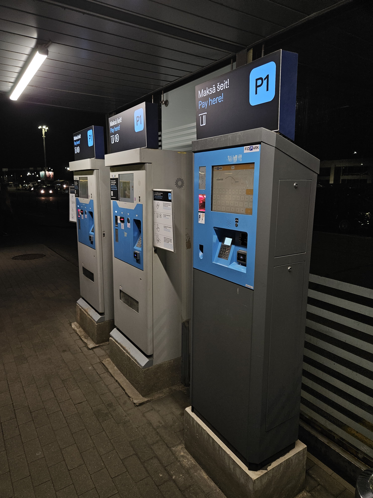
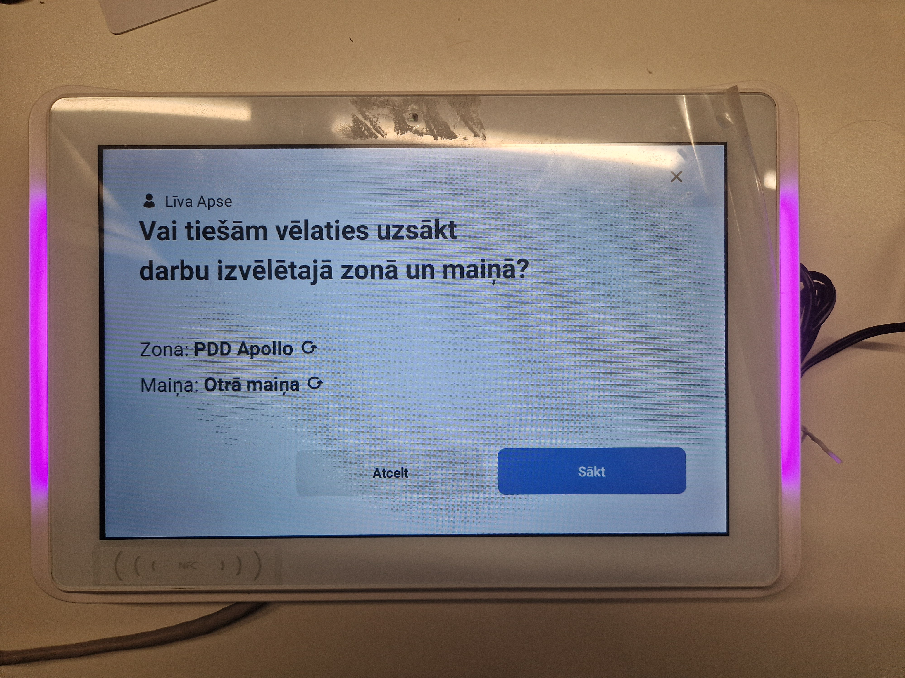

Viena nedēļa
Studenta Dzīvē
Ieskats Latvijas Universitātes Datorikas nodaļas studenta ikdienā – no koda rindām līdz studentu brīvībai.
Lekciju grafiks
Datorikas studenta nedēļa ir diezgan daudzveidīga — klātienes lekcijas no rītiem, tiešsaistes lekcijas vakaros. Grafika krāsas mainās automātiski: aktīvā lekcija ir iezīmēta rozā-zilā krāsā, bet ja neviena lekcija pašlaik nenotiek, nākamā gaidāmā tiek iezīmēta zilā krāsā ar tagu "Nākamā". Pārējās lekcijas paliek noklusējuma izskatā.
Pirmdiena
Dabas zinātnes (18. aud.)
Dabas zinātnes (18. aud.)
Datu bāzu praktikums (336. telpa)
Otrdiena
Algoritmu teorija (415. aud.)
Caurviju prasmju attīstība (Tiešsaiste)
Trešdiena
Tīmekļa dizaina pamati (13. aud.)
Tīmekļa dizaina pamati (lab.d)
Ceturtdiena
Objektorientētā prog. (Tiešsaiste)
Objektorientētā prog. (Tiešsaiste)
Piektdiena
Sporta aktivitātes I
Darbu plānotājs
Nedēļas uzdevumi vienuviet — pievieno uzdevumu ar nosaukumu, prioritāti, sarežģītību un termiņu, tad velc un nomet starp kolonnām, lai atzīmētu progresu. Kad uzdevums nonāk "Pabeigts" — konfeti garantēts.
Jāizdara
Procesā
Pabeigts
Nedēļa skaitļos
Šī nedēļa skaitļos — daļa no tiem ir precīzi, daļa aptuveni. Koda rindu skaits nāk no faktiskiem commit'iem, kafijas tases — no godīgas pašnovērošanas. Efektivitātes procents ir subjektīvs — nedēļā, kad viss tiek padarīts laikā, tas ir augsts. Šonedēļ — gandrīz.
Digitālā vide
Studijās un darbā izmantoju diezgan daudz dažādu rīku — daži ir obligāti (e-studijas, LUIS), citi kļuvuši par ieradumu (VS Code, GitHub). Katrs no tiem risina kādu konkrētu problēmu ikdienā, un kopā tie veido ekosistēmu, bez kuras studenta dzīve būtu krietni sarezgītāka.
Visual Studio
Galvenā darba vide nopietnai programmēšanai un C++ / C# projektiem.
e-Studijas
Digitālais mācību centrs – te dzīvo kursi, materiāli un svarīgākie testi.
GitHub
Koda versiju kontrole un komandas darbu sirds. Šeit viss tiek droši glabāts.
Teams
Saziņas kanāls attālinātajām lekcijām un ātrām konsultācijām ar kursabiedriem.
VirtualBox
Virtuālās pasaules – šeit mēs droši eksperimentējam ar dažādām operētājsistēmām.
LUIS
Oficiālā LU sistēma, kurā apskatīt atzīmes un reģistrēt studiju līgumus.
Canva
Radošais palīgs prezentāciju un vizuālo materiālu veidošanai studiju darbiem.
Stack Overflow
Zināšanu enciklopēdija – vieta, kur meklēt atbildes uz visiem koda jautājumiem.
Izmantotās tehnoloģijas:
Darbs IT nozarē
Paralēli studijām Latvijas Universitātē strādāju kā jaunākā izstrādātāja uzņēmumā SIA BISS — vienā no vadošajiem IT uzņēmumiem Latvijā, kas specializējas autostāvvietu pārvaldības sistēmās un integrētiem maksājumu risinājumiem. Šī pieredze ļauj apvienot universitātē apgūtās teorētiskās zināšanas ar reālu darba vidi.
Ikdienā strādāju ar .NET platformu, relāciju datu bāzēm un sistēmu integrācijām. Viens no aizraujošākajiem aspektiem ir iespēja redzēt sava darba rezultātu reālajā pasaulē — sistēmas, pie kurām strādāju, tiek izmantotas autostāvvietās Latvijā un ārpus tās. Stāvvietu maksājumu automāti un sienas termināļi nav tikai ierīces — tie ir komandas darba produkts.
Studiju un darba savienošana prasa disciplīnu un laika plānošanu. Tomēr šī kombinācija sniedz neaizstājamu pieredzi un ļauj nedēļas garumā ne tikai mācīties no lekcijām, bet arī no reāliem projektu izaicinājumiem.

Stāvvietas maksājumu automāts
Sienas terminālisNedēļas albums
Katra diena ir savādāka — dažreiz tā ir pilna ar lekcijām un termiņiem, citas reizes atstāj laiku sportam vai vienkārši pastaigai. Šis albums ir vizuāls ieskats tajā, kā izskatās studenta nedēļa no pirmdienas līdz piektdienai. Izvēlies dienu, lai apskatītu foto.
Marta Karīna Skrastiņa
Par mani
Sveiki! Es esmu LU Datorikas nodaļas 3. kursa studente. Paralēli studijām strādāju kā jaunākā izstrādātāja uzņēmumā SIA BISS, ikdienā apvienojot akadēmiskās zināšanas ar reālu darba pieredzi IT nozarē.
E-pasts: ms23123@edu.lu.lv
Github: github.com/martaskrastina04